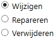
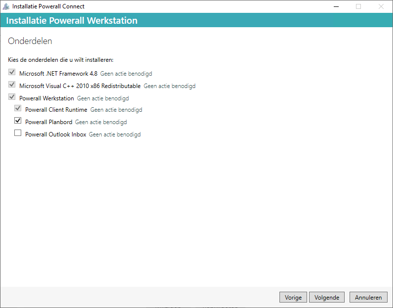

Type onder bij zoeken Programma in.
Selecteer bovenaan Programma's installeren of verwijderen.
Zoek op Powerall Connect.
Kies voor de knop Wijzigen.

Kies voor de knop Volgende. (Welkom)

Kies voor de knop Volgende. (Onderdelen)

Opmerking: Vink eventuele andere onderdelen (Planbord en/of Outlook Inbox) aan.
Kies voor de knop Volgende. (Overzicht)
Bevestig de Windows gebruikersaccount melding.
-
De melding Powerall Connect is succesvol gewijzigdverschijnt.
Kies voor de knop Sluiten.